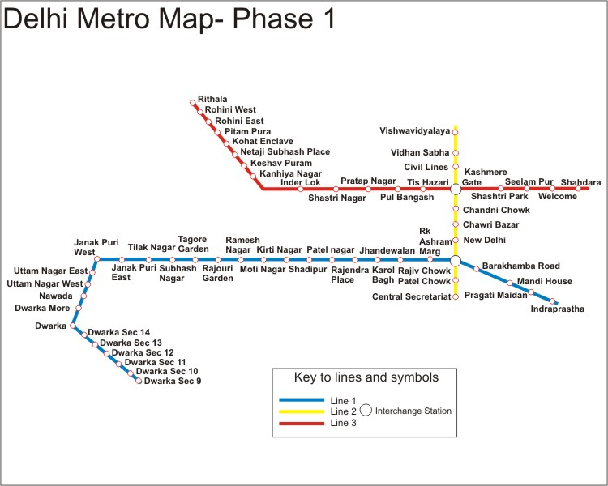

Places of Maps Digitized by QGIS

| |
|
| |
TEMPORAL ANALYSIS OF DELHI METRO
Started from December 2005 to 11 November 2006. It is 32.10 kilometers in length with 30 stations.
PHASE 1-
The Delhi Metro is a metro framework serving Delhi and its satellite urban communities of Faridabad, Gurgaon, Bahadurgarh, Noida and Ghaziabad in the National Capital Region of India. Delhi Metro Rail Corporation Limited (DMRC), a state-possessed organization with square with value cooperation from the Government of India and the Government of Delhi, fabricated and works the Delhi Metro. Physical development at the Delhi Metro began on 1 October 1998.
An aggregate of 65 kilometers long system with 58 stations and the accompanying 3 courses (beginning parts of Red, Yellow and Blue lines) were worked inside the points of confinement of Delhi state, stations continuously began to open from 25 December 2002 to 11 November 2006.
Red line opened progressively from 25 December 2002 to 1 April 2004. It was 22.06 kilometers long and included 18 stations.
Yellow line started on 20 December 2004. It has 10.84 kilometers long track and included 10 stations.
Blue line progressively
PHASE-2
A sum of 124.63 kilometers long system with 85 stations and the accompanying 10 new courses and augmentations was worked, out of which seven courses are expansion spurs of the Phase I arrange, three were new shading coded lines and three courses interface with different urban communities (Yellow Line to Gurgaon, Blue Line to Noida and Blue Line to Ghaziabad) of the national capital region, outside the physical furthest reaches of Delhi state, in the conditions of Haryana and Uttar Pradesh. It started on 3 June 2008. Toward the finish of Phases I and II, the total aggregate length of the system ended up 189.63 km with 143 stations.
PHASE-3
Phase I (Red, Yellow and Blue lines) and phase II (Green, Violet and Orange lines) had concentrated on adding new spiral lines to extend the network. Phase-III incorporates 11 expansions to the current lines and in addition building two ring lines (Pink and Magenta lines). Stage III has 28 underground stations, 2 new lines and 11 course expansions; totaling 167.27 km. Phase 3 contains 3 new Lines in Delhi Metro System, Pink Line, magenta line and grey line. Work on Phase III began in 2011 with 2016 being the arranged deadline. Although the work is expected to be completed by 2018 end.